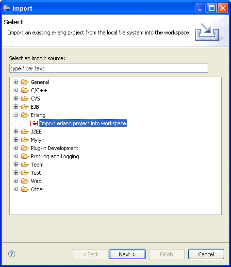

Importing an Erlang Project
Import a project:
Click → → → or right click in →

In the Erlang Project Import Wizard, for Erlang project

In the source field select project.
In Options you can choose to link to all folders and all files or to Copy selected files and selected folders to workspace.
To import your project, click .